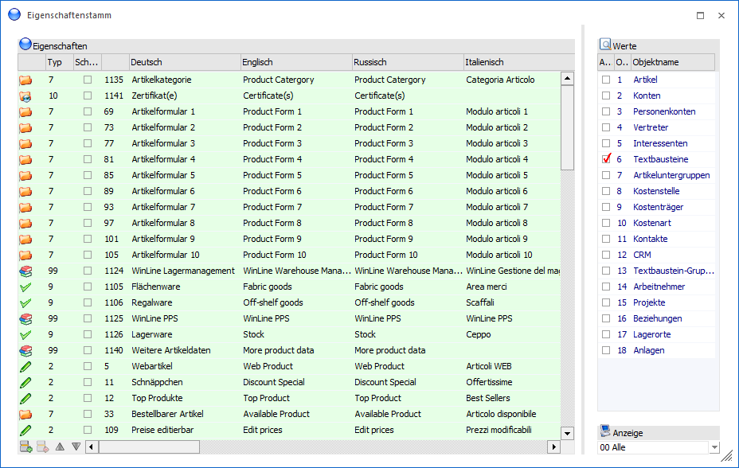
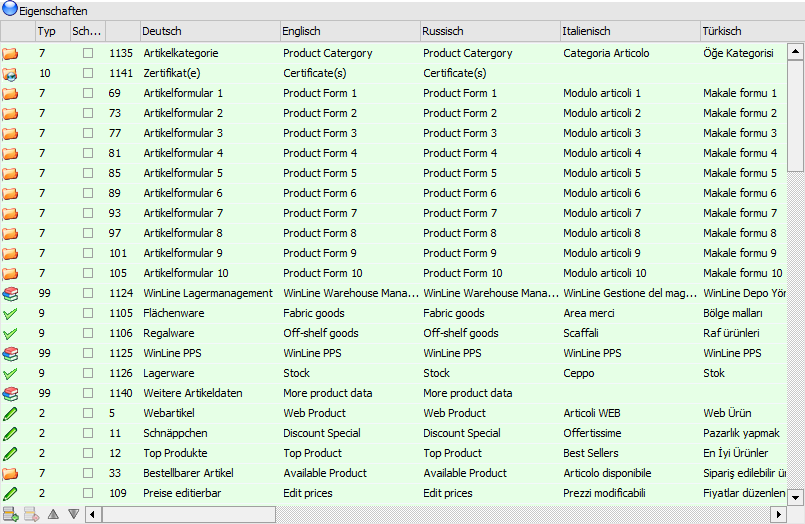
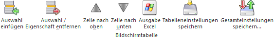
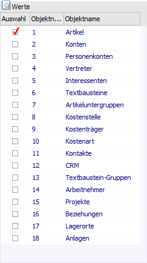
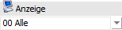

Im Menüpunkt…
1 WinLine START
1 Optionen
1 Eigenschaften
… können Eigenschaften definiert werden. Eigenschaften können ein Stammdatenobjekt näher beschreiben bzw. können über die Eigenschaften gewisse Optionen bei einem Objekt hinterlegt werden.
Hinweis
Standardmäßig werden einige Eigenschaften mit ausgeliefert, welche u.a. im Zusammenhang mit der WinLine WEBEdition verwendet werden. Die Auflistung der Eigenschaften mit deren Verwendung kann dem Kapitel WinLine Eigenschaften entnommen werden.

Das Fenster ist in die folgenden Bereiche unterteilt, welche nachfolgend beschrieben werden:
ü Tabelle "Eigenschaften"
In der
Tabelle können neu Eigenschaften angelegt oder bestehende editiert werden.
ü Tabelle "Werte"
Mit Hilfe der
Tabelle findet die Zuweisung von Eigenschaft und Objekt statt.
ü Anzeige
An dieser Stelle kann
definiert werden, welche Eigenschaften angezeigt werden sollen.
Tabelle "Eigenschaften"

In der Tabelle werden alle bestehenden Eigenschaften aufgelistet. Diese können verändert bzw. ergänzt oder komplett neue Eigenschaften angelegt werden (siehe Button "Neu").
Hinweis
Die Zuweisung von Eigenschaft und Objekt findet mit Hilfe der Tabelle "Werte" statt.
Ø Eigenschaft
In der ersten Spalte der Tabelle wird anhand eines Icons auf den Typ der Eigenschaft hingewiesen.
ü - Überschrift
ü - Integer oder Double
ü - Fix
ü - Veränderbar
ü - Checkbox
ü - Mehrfachauswahl
ü - CRM Historie
Ø Typ
In dieser Spalte kann definiert werden, welcher Wert in der Eigenschaft hinterlegt werden soll. Dabei gibt es folgende Möglichkeiten.
ü 0 - Überschrift
Mit
Überschriften können mehrere Eigenschaften gruppiert bzw. zusammengefasst
werden. Eine Überschrift kann an jeder beliebigen Stelle eingebaut werden, muss
jedoch auch (wie alle anderen Eigenschaften) einem Objekt zugeordnet werden. Der
Überschriftentitel wird auch z.B. im Filter-Assistenten bei den der Überschrift
zugeordneten Eigenschaften mit angezeigt.
ü 2 - Integer
Es kann nur eine
ganzstellige Zahl (z.B. 5 oder 34589) ohne Trennzeichen hinterlegt werden.
ü 4 - Double
Es kann eine normale
Zahl hinterlegt werden.
ü 7 - Fix
Bei Verwendung des Typs
"Fix" können in den nachfolgenden Zeilen alle denkbaren Eingabemöglichkeiten
(Wertliste) für die Eigenschaft definiert werden. Bei dem entsprechenden
Stammdatenobjekt, welchem die Eigenschaft zugeordnet wurde, wird eine
Auswahlliste angezeigt, aus welcher eine der Eingabemöglichkeiten gewählt werden
kann.
ü 8 - Veränderbar
Bei Verwendung
des Typs "Veränderbar" können in den nachfolgenden Zeilen alle denkbaren
Eingabemöglichkeiten (Wertliste) für die Eigenschaft definiert werden. Bei dem
entsprechenden Stammdatenobjekt, welchem die Eigenschaft zugeordnet wurde, wird
eine Auswahlliste angezeigt, aus welcher eine der Eingabemöglichkeiten gewählt
werden kann. Zusätzlich gibt es die Möglichkeit, neue Eingabemöglichkeiten
hinzuzufügen. Wird dies gemacht erfolgt eine Abfrage, ob dieser neue Wert im
Eigenschaftenstamm gespeichert werden soll. Die Eingabelänge von neuen Einträgen
ist auf 100 Zeichen begrenzt.
ü 9 - Checkbox
Bei dieser Option
wird eine Checkbox dargestellt, die entweder aktiviert oder deaktiviert wird.
Checkboxen können immer mit dem Wert 0 (deaktiviert) oder 1 (aktiviert)
abgefragt werden (für Filter).
ü M - Mehrfachauswahl
Wird dieser
Typ angelegt, so können in den nachfolgenden Zeilen alle denkbaren
Eingabemöglichkeiten (Wertliste) für die Eigenschaft definiert werden. Bei dem
entsprechenden Stammdatenobjekt, welchem die Eigenschaft zugeordnet wurde, wird
eine Auswahlliste angezeigt, aus welcher dann beliebige - auch mehrere -
Einträge ausgewählt werden können.
ü C - CRM Historie
Bei Verwendung
des Typs "CRM Historie" können in den nachfolgenden Zeilen alle denkbaren
Eingabemöglichkeiten (Wertliste) für die Eigenschaft definiert werden. Bei dem
entsprechenden Stammdatenobjekt, welchem die Eigenschaft zugeordnet wurde, wird
eine Auswahlliste angezeigt, aus welcher eine der Eingabemöglichkeiten gewählt
werden kann. Nach der Auswahl wird zunächst ein CRM Fall angelegt, worüber die
Tätigkeit nachvollziehbar dokumentiert werden kann und anschließend die
Eigenschaft gesetzt.
Hinweis
Eigenschaften des Typs "C - CRM Historie" können aktuell für die Stammdatenobjekte "Personenkonten", "Interessenten", "Kontakte" und "Arbeitnehmer" definiert werden. Zusätzlich können solche Eigenschaften nur von Benutzern des Typs "CRM Benutzer" genutzt werden (weitere Informationen entnehmen Sie bitte dem Kapitel CRM Historien Eigenschaften)!
Ø Schnelle Sortierung
Diese Option wird nur für Eigenschaften des Objekts "12 - CRM" unterstützt und bewirkt, durch Auslagerung der (CRM) Eigenschaften in eine eigene Tabelle, eine Performancesteigerung bei Ausgabe von CRM-Reports. Derzeit können bis zu 20 Eigenschaften für die Schnellsortierung verwendet werden. Werden mehr als 20 Eigenschaften mit dieser Option versehen, so wird eine entsprechende Meldung ausgegeben.
Ø Identifikationsnummer
In dieser Spalte wird die interne Identifikationsnummer der Eigenschaft angezeigt. Es handelt sich dabei um eine frei definierbare Nummer, welche in weiterer Folge für das Auswerten der Eigenschaften benötigt wird. Da die nächste freie Nummer bei der Anlage von neuen Eigenschaften automatisch vorgeschlagen wird, ist eine Eingabe an dieser Stelle nicht notwendig!
Hinweis
Die Nummern 1 bis 999 sind fix vergeben, neu angelegte Eigenschaften können nur Nummern größer 1000 haben.
Ø Bezeichnung (Sprache)
In den Spalten "Deutsch" bis "Sprache 20" erfolgt die Eingabe der Bezeichnung der Eigenschaft für die jeweilige Sprache.
Ø Anzahl: Verwendet in Auswertungen
In dieser Spalte wird die Anzahl der Auswertungen (CRM-Reports) angezeigt, in welchen diese Eigenschaft verwendet wird. Je höher die Anzahl hier ist, desto sinnvoller ist es, dieser Eigenschaft in die "Schnelle Sortierung" aufzunehmen.
Tabellenbuttons

Ø Auswahl einfügen
Mit diesem Button können bei einer Wertliste (Eingabemöglichkeiten) bei den fixen bzw. veränderbaren Eigenschaften Zeilen bzw. Einträge eingefügt werden.
Ø Auswahl / Eigenschaft entfernen
Mit diesem Button können Eigenschaften bzw. bestehende Einträge aus einer Wertliste gelöscht werden. Dieser Button ist nur dann aktiv, wenn es sich um eine selbst angelegte Eigenschaft (Wert > 1000) handelt und ausreichend Objektrechte vorhanden sind.
Hinweis
Durch Anklicken des Buttons "Auswahl / Eigenschaft entfernen" werden alle vorhandenen Mandanten auf die Verwendung der Eigenschaft überprüft. Sollte diese tatsächlich verwendet werden, so wird eine entsprechende Meldung angezeigt und es kann entschieden werden, ob tatsächlich gelöscht werden soll.
Ø Zeile nach oben / Zeile nach unten
Mit diesen Buttons kann die Reihenfolge der Eigenschaften bzw. der Wertliste (Eingabemöglichkeiten bei den fixen bzw. veränderbaren Eigenschaften) geändert werden.
Ø Ausgabe Excel
Durch Anwahl des Buttons "Ausgabe Excel" wird der Inhalt der Tabelle nach Microsoft Excel übergeben.
Ø Tabelleneinstellungen speichern
Die Spalten einer Tabelle können grundsätzlich an beliebige Positionen verschoben, bzw. in der Breite entsprechend angepasst werden. Durch Anwahl des Buttons "Tabelleneinstellungen speichern" werden die Einstellungen benutzerspezifisch gespeichert und bei dem nächsten Aufruf des Programmpunktes wieder vorgeschlagen.
Ø Gesamteinstellungen speichern
Im Gegensatz zu "Tabelleneinstellungen speichern" können mit "Gesamteinstellungen speichern" mehrere Tabellenaufbauten gespeichert und nach Wunsch geladen werden. Zusätzlich werden Sonderfunktionen der Tabelle (z.B. "Spalte gruppieren") ebenfalls bei der Speicherung bedacht.
Tabelle "Werte"

In der Tabelle "Werte" kann definiert werden, in welchen Stammdatenobjekten die Eigenschaft zur Verfügung stehen soll. Wird keines der Objekte gewählt, so sind die Eigenschaften auch in keinem Stammdatenfenster sichtbar. Folgende Objekte stehen zur Verfügung:
ü 1 - Artikel
ü 2 - Konten
ü 3 - Personenkonten
ü 4 - Vertreter
ü 5 - Interessenten
ü 6 - Textbausteine
ü 7 - Artikeluntergruppen
ü 8 - Kostenstelle
ü 9 - Kostenträger
ü 10 - Kostenart
ü 11- Kontakte
ü 12 - CRM
ü 13 - Textbaustein-Gruppen
ü 14 - Arbeitnehmer
ü 15 - Projekte
ü 16 - Beziehungen
ü 17 - Lagerorte
ü 18 - Anlagen
Anzeige

Ø Anzeige
Über die Auswahlliste kann gesteuert werden, welche Eigenschaften welches Objekts in der Tabelle angezeigt werden sollen. Wird auf eine Anzeige ungleich "00 - Alle" geschaltet, so wird bei Anlage von neuen Eigenschaften automatisch die Zuordnung in der Tabelle "Werte" aktiviert.
Buttons
Ø Ok
Durch Anklicken des Buttons "Ok" bzw. der Taste F5 werden alle Änderungen gespeichert.
Hinweis
Sollten neue Eigenschaften angelegt worden sein, so erhält der aktuelle Benutzer automatisch die Objektberechtigung "5 - Ersteller". Damit Eigenschaften in den Stammdatenobjekten verwendet werden können, muss mindestens das Objektrecht "2 - bearbeiten" bei den jeweiligen Benutzern bzw. Benutzergruppen vorhanden sein (siehe auch Button "Berechtigungen").
Ø Ende
Durch Drücken des Buttons "Ende" bzw. der Taste ESC wird das Fenster geschlossen und alle nicht gespeicherten Eingaben verworfen.
Ø neue Eigenschaft
Mit Hilfe des Buttons "neue Eigenschaft" kann eine neue Eigenschaft angelegt werden.
Ø Eigenschaftsliste
Durch Anwahl des Buttons kann eine Liste aller angelegten Eigenschaften und ihre Zuordnung zu den jeweiligen Objekten am Bildschirm ausgegeben werden.
Ø Eigenschaftsverwendung
Durch Anklicken des Buttons "Eigenschaftsverwendung" wird das Fenster Verwendung von Eigenschaften, geöffnet, in welchem Details zu Verwendung der Eigenschaften abgefragt werden können.
Ø Berechtigungen
Mit dem Button "Berechtigung" kann das Fenster "Objekt Berechtigungen" geöffnet werden, um für die einzelnen Eigenschaften Berechtigungen für Benutzer oder Benutzergruppen zu vergeben. Nähere Informationen zu den Objekt Berechtigungen finden Sie im Kapitel "Objektberechtigungen".